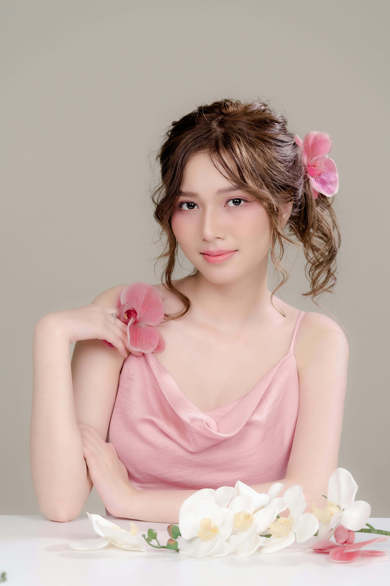
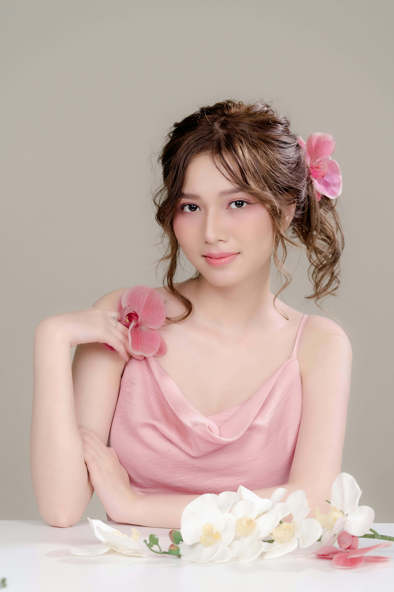
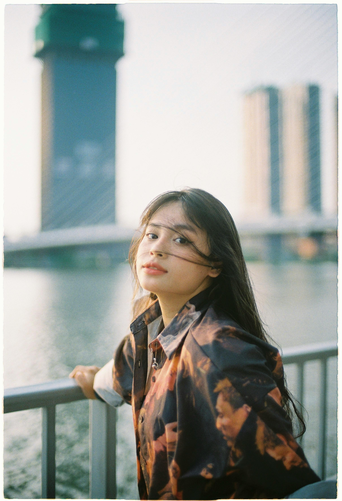
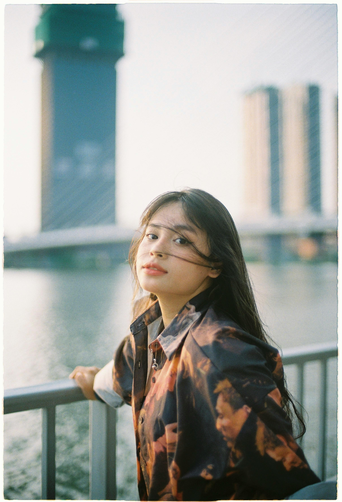

Ha minőségi képeket szeretnél
korrekt áron, keress bizalommalMindannyiunk éltében eljön az a pillanat, amikor profi képeket szeretne magáról, családjáról, szeretteiről készíttetni. Szabadban vagy stúdióban? Hol kezdjem el kihez forduljak? Ezekre és még számos kérdésre nyújtok profi megoldást.
- a pocaklakó születése kismama fotózás
- majd a születése után babafotózás
- régen látott, messze élő családtagok, rokonok megörökítése egy családi fotózáskeretein belül
- megtörtént a lánykérés, és hamarosan esküvőtöklesz
- céges rendezvényre profi fotósra van szükségetek
- önéletrajzhoz, szakmai profilhoz portrékat szeretnél
Neked milyen fotózásban segíthetek?
Rendezvény fotózás
Minden egyes rendezvénymás és más legyen szó vállalati rendezvényről, szalagavatóról, ballagásról, érdemes megörökíteni. Ezek azzal a céllal lettek megszervezve, hogy emlékezetesek legyenek.

Esküvői fotózás
Különleges egyedi és hangulatos képekre vágytok? Akkor jó helyen jártok! A fotózási koncepciót veletek együtt alakítom ki, minden részletre odafigyelve, hiszen a nagy nap, a fotózás, az elkészült fotók, Rólatok szólnak.

Családi fotózás
Egyik legkedvesebb fotózási témám a gyermekek és a család szeretetének és boldog hangulatainak a megörökítése. Ezek a pillanatok, amelyek igazán emlékké tudnak válni és szívesen tesszük ki a falra. Szívesen nézünk rá nap mint nap.

Portré fotózás
Szeretném megmutatni, hogy nem létezik olyan, hogy valaki nem fotogén. Szeretek olyan légkört teremteni, ahol feszengés nélkül önmagukat adhatják az emberek.

A fotózás számomra
kifejező eszköz, az érzelmeket, a hangulatot szeretném visszaadni a fotókon.
Teljes odaadással, szenvedéllyel, szeretettel és energiával örökítek meg egy-egy eseményt, amelyek elbűvölik az ügyfeleket és tükrözik a hozzáértésemet.
Célom, hogy, ha a kedves megrendelő bármikor visszanézi a képeket, mosolyt csaljon az arcára. Az elégedett mosolyok, visszajelzések feledtetik a munkával töltött idő fáradalmait.
Rólam mondták
„Nagyon tetszik, amilyen beleéléssel írsz a fotózásról. Nagyon szépek a képek, ügyes vagy, le a kalapommal.”
Berecz István„Nagyon szép képeket csinálsz. A képeket látva, kedvet kaptam, hogy újra beiratkozzak hozzád.”
Molnár Zsuzsi„Még soha nem készült még ilyen szép sorozat rólam. Nagyon elégedett vagyok!”
Berki Gabriella 



 
